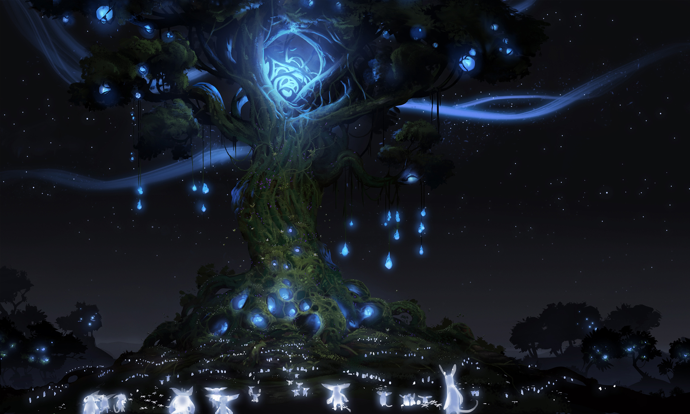
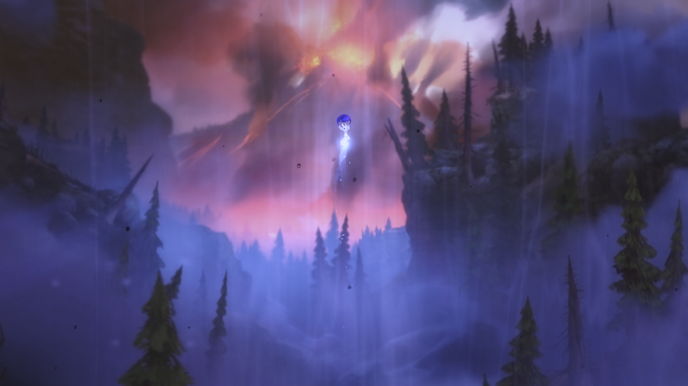
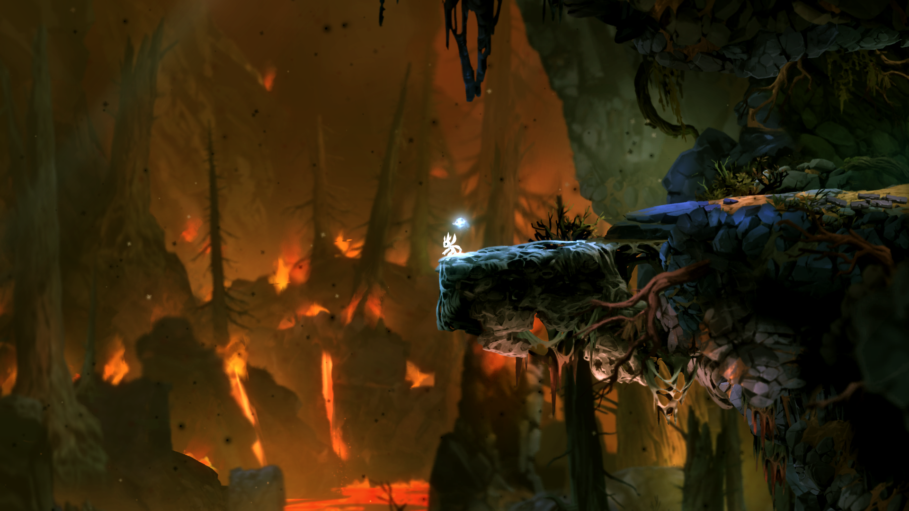
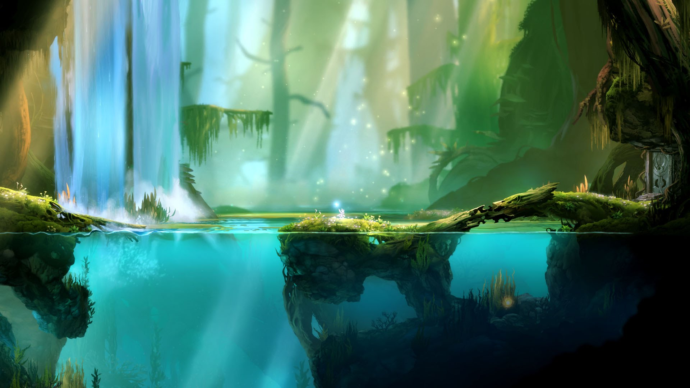
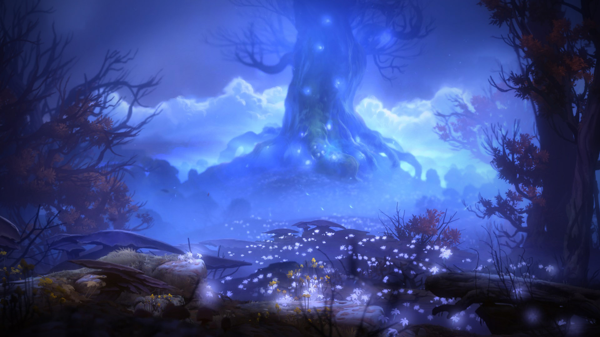
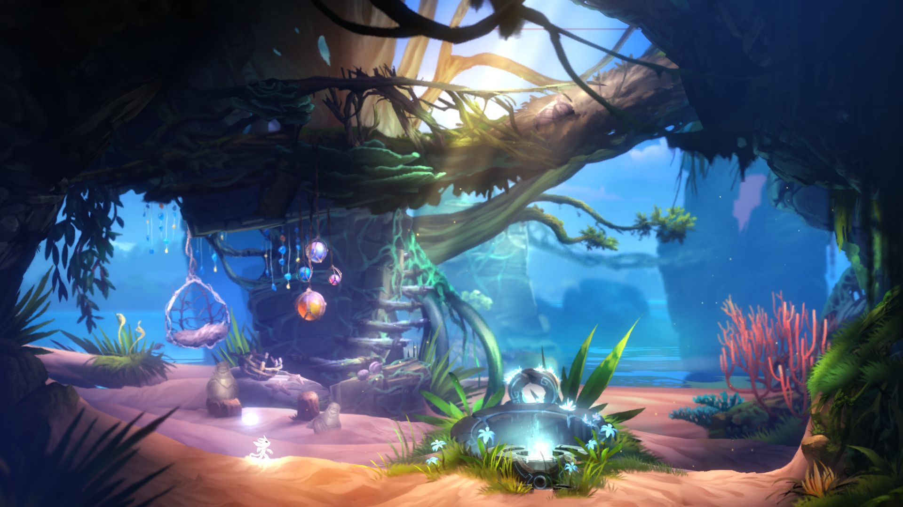
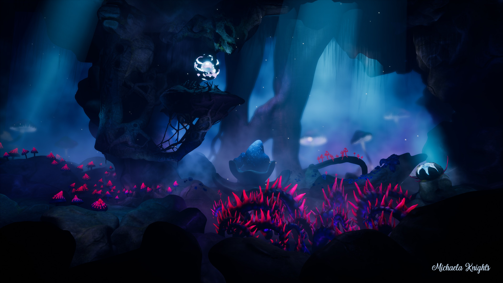
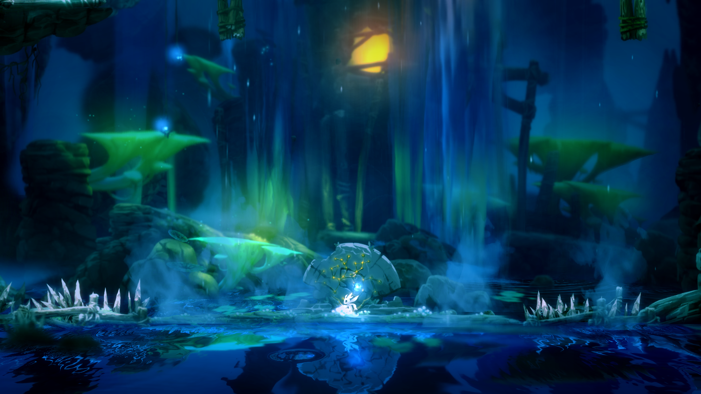

Ori and the Blind Forest

Explore the Background of Ori
Explore the Music behind Ori
Check out the Sources used
My Contact Information
Explore the Visuals of Ori

Explore the Gameplay of Ori

Horu Fields

Thornfelt Swamp

Sunken Glades

Explore the Story of Ori

Black Root Burrows

History of 2D Platformers
×